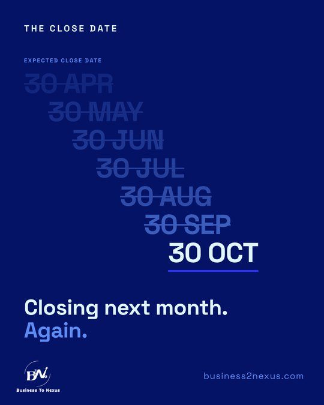

LinkedIn series · 2026 · No. 005 · Made for b2ne
CRM Graveyard
A LinkedIn series about the problems that pile up inside a CRM, with a different visual idea for every post.
- FOR
- Founders and sales leads at small and mid-sized B2B tech companies
- MY ROLE
- Everything, end to end: concept, copy, design, video, posting and reading the results. I run B2Ne’s LinkedIn campaigns on my own.

THE IDEA
One world, many visual grammars.
Every post lives in one B2Ne world (palette, type, the real logo, the same corners for kicker, logo and URL), but no two posts look alike.
A ledger records each post’s problem and its visual grammar, so a new post is never a re-skin of an old one.
THE SERIES
Sixteen pieces, one ledger.
Pick a post to see it, with the problem and the insight it was built on.
THE LEDGER
Counting what’s been used.
Each backlog idea is paired with the problem it would fit, never used for its own sake: a record decaying character by character for stale data, a path that simply stops for ownership nobody holds.
THE RULES
What the ledger stopped the series repeating.
After fifteen posts, the ledger named the patterns that had been used enough.
Six posts already used a centred headline, a small symbol and a punchline.
Four posts used an outlined interface card or form. Don’t add another.
Coral had been the “bad” signal in seven posts, but the brand palette has no coral. From post 14 on, the series stays within Navy, Indigo, Soft Blue and Ice.
A bell, a clock and a planchette carried three posts. Later posts let the composition do the work.
WHAT DIDN’T MAKE IT
The post that got deleted.
One post tried AI-rendered glossy variants: glass panels, glow, real third-party logos and a distorted B2Ne logo. It was deleted on 1 Oct 2026 as off-brand.
It stays in the ledger as a record of what not to do.
HOW IT WAS MADE
The first twelve posts were made in a design tool. From post 14, each post is an HTML source with a spec file beside it, rendered to 1080 × 1350 by a script.